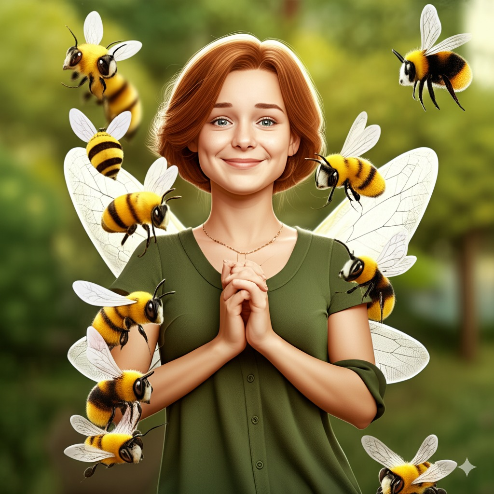
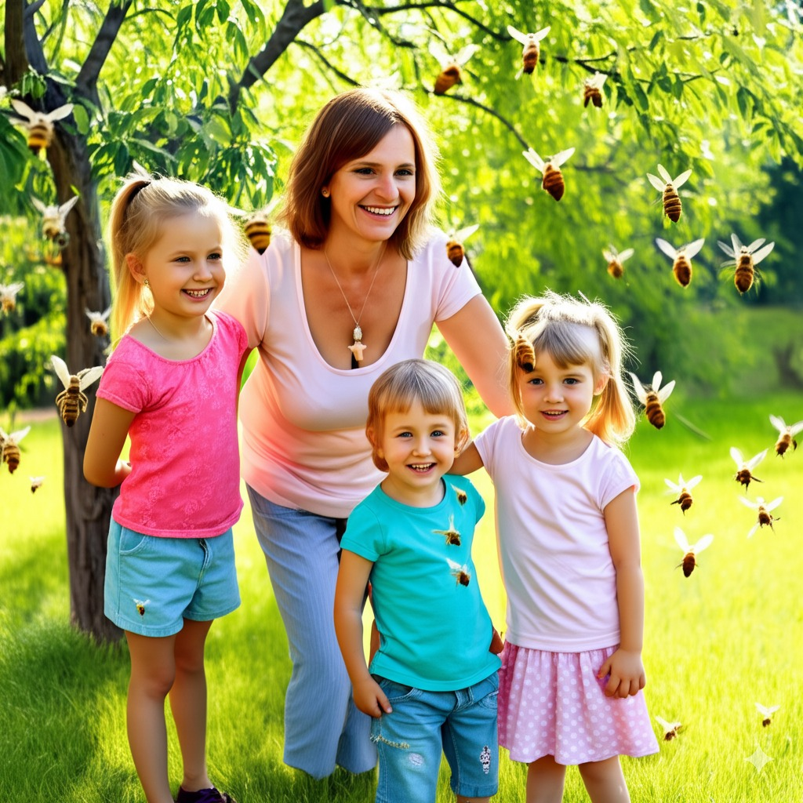
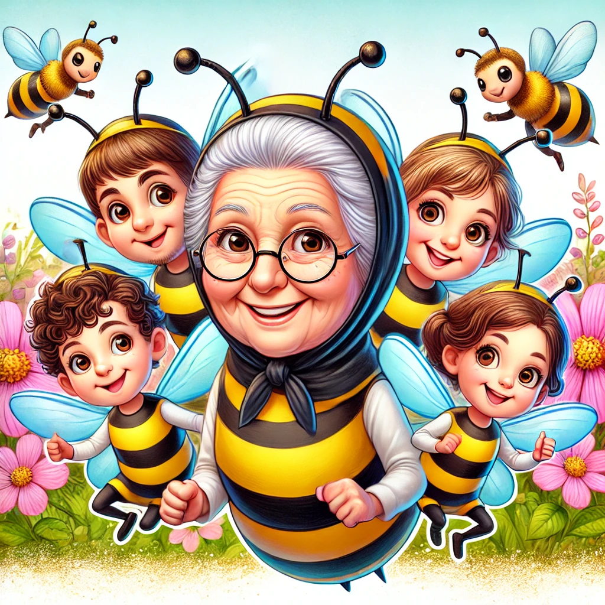
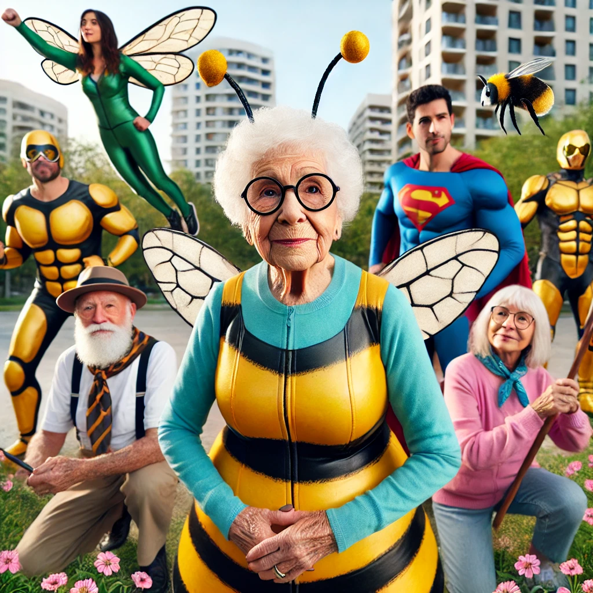

קצת עליי
שלום!
שמי דבורה, אני בגמלאות ואוהבת לעזור לאנשים ללמוד דברים חדשים בכל גיל.
אני אוהבת להתחפש בפורים לדבורה, ולהביא את שמחת החיים שלי אל כל העולם.
שלום, אני דבורה. מאז ילדותי, תמיד הרגשתי שיש בקסם המילים משהו שמעורר בי השראה וחיבה עמוקה. זוכרת איך סבתא סיפרה לי סיפורים בערב, וכך נפתח בפני עולם של דמיון ורגש.
לאחרונה בחרתי לקחת את ההחלטה לעבור לגמלאות, אך עבורי גיל הוא רק מספר – אני ממשיכה ללמוד, לגדול ולהתפתח. במשך שנים הייתי מורה לספרות, ובמהלך שנותיי בהוראה למדתי שאפשר להנחיל ידע ולהעביר השראה באמצעות המילים. אני מאמינה שספרות היא לא רק מקצוע, אלא דרך לראות את העולם מזווית אחרת ולהבין את עומקו של כל סיפור חיים.
כיום, בזמני הפנוי אני מוצאת סיפוק בכתיבת סיפורים קצרים, בהם אני משתפת את זכרונותיי, חוויותיי ואת ההבנות שצברתי לאורך השנים. אני אוהבת לטייל עם המשפחה, להכיר מקומות חדשים ולחוות את העולם במלואו.
מעבר לכך, אני מתלהבת מלהתעדכן בטכנולוגיות חדשות שמקלות על חיי היום-יום, ומאפשרות לי לשמור על קשר עם האנשים היקרים לי מכל פינה בעולם. בכל יום אני מוצאת סיבה חדשה להמשיך ללמוד, לגלות ולשתף את עולמי הקטן עם כולם.
בסופו של דבר, אני מאמינה שהחיים הם מסע מתמיד של גילוי והתחדשות – ולא משנה באיזה גיל אנו נמצאים, תמיד יש מקום לתשוקה, להשראה ולחלומות חדשים.
למה בחרתי לבנות את האתר?
כדי להראות שבכל גיל תמיד אפשר ללמוד דברים חדשים ולשתף ידע וחוויות, בדרך הומוריסטית ואופטימית.
התמונות שלי
מגיל צעיר אהבתי מאוד דבורים, והם אהבו אותי. לא יודעת אם זה בגלל השם שלי, אבל זו הייתה אהבה ממבט ראשון.
היום השמח ביותר בחיי - סיום התואר
לסיים תואר זה כמו להוריד אבן מהלב, במיוחד כשלא מדובר באהבת חיי - דבורים. יחד עם זאת, תקופתי כמורה הייתה מדהימה, ותלמידיי המדהימים לימדו אותי המון על החיים. אני מודה על הזכות להיות מורה בארץ ישראל.
אהבת חיי 2 - ארנולד
את בעלי היקר ארנולד הכרתי בבית הספר. הוא היה השומר, ומהרגע הראשון שנפגשנו, היה קסם באוויר. הוא הזמין אותי לדיסקוטק, ומשם הכל הסטוריה. עד היום אני והוא גרים וחיים יחד באושר ועושר.

הטיול הראשון בטבע עם ילדיי
כבר בטיול הראשון עם ילדיי, האהובים שלי, הדבורים התאהבו בהם גם כן וקיבלו אותנו לכוורת באהבה. אנחנו האנשים היחידים בארץ שהדבורים מוכנים לגור איתם. והקסם שהיה בטיול הזה, נצרב לי ולילדיי לעד.
הטיול האמנותי
במהלך טיול עם ילדיי ונכדיי בטבע, נתקלנו פתאום בצייר דבורים. הוא לא יכל שלא להתפעל מאיתנו, ופשוט ביקש שנעמוד במקום ולא נזוז למשך חצי שעה. התוצאה לפניכם:(קרדיט לאמן סאלבדור דולאי)
אני ונכדיי בפורים
אני כבר מזדקנת, אבל רוח האופטימיות השמחה והצחוק שבי רק משתבחות. החג האהוב עליי ועל נכדיי הוא פורים. השנה זכינו בתואר גיבורי הפורים שבאו להציל את העולם! 
המשך יבוא !
הפלייליסטים שלי
כדבורה מקצועית, אני ממש אוהבת שירים, איך לא, על בני עמי, הדבורים. שיר שממש מרגש אותנו והפך לסמל שלטון ולאום בעולם הכוורות(המשפחה שלי), זה השיר הבא שאותו אני מקדישה לכם - הקוראים המדהימים שלי.
הסדרה הטובה בעולם שבה אני צופה עד היום בלופים, מאחר והיא מזכירה לי את משפחתי היקרה. בכללי, יעל פוליאקוב היא יונקת הדבש מספר אחת ועל כך אני מעריצה אותה!
לייק
Buy Me A coffee (WITH LIKES).
אצלנו בכוורת, הדבורה האהובה ביותר,
הופכת למלכת הכוורת.
אם תרצו שתהיה בהסטוריה דבורה המלכה,
תמכו בי על ידי לחיצה על הכפתור מתחת לטקסט זה.
מי שלא נותן לייק, דבור.
QR Code
סירקו את הברקוד כדי לבקר באתר בכל מכשיר!
Q&A
מהם ההבדלים העיקריים בין Web1, Web2, ו-Web3?
תשובה:
- Web1: אתרים סטטיים, מעט אינטראקציה מצד המשתמשים.
- Web2: תוכן דינמי, רשתות חברתיות, משתמשים יוצרים תוכן ומתקשרים זה עם זה.
- Web3: טכנולוגיות מבוזרות (blockchain), בעלות של המשתמשים על התוכן/נכסים דיגיטליים.
תרחיש שימוש – מעקב אחרי פעילות דבורים במושבות חקלאיות
ב-Web1:
המשתמש נכנס לאתר סטטי שמציג נתונים על פעילות הדבורים במושבות, כאשר המידע עודכן פעם בכמה זמן ואינו משתנה בזמן אמת. הנתונים נאספו ונכתבו על ידי מומחים, ללא אפשרות למשתמשים להוסיף או לעדכן אותם באופן ישיר.
ב-Web3:
המשתמש משתמש בפלטפורמה שמחולקת למודולים, אשר בה חיישנים במושבות מעדכנים נתונים בזמן אמת, והמידע עובר אימות על ידי קהילת המשתמשים. כך מתקבל מידע מדויק, שקוף ועדכני באופן אוטומטי, עם יכולת לנתח ולהשוות נתונים לאורך זמן.
Contact Me
אם יש לכם שאלות, תרצו לשתף חוויות משלכם, לקבל עזרה מקצועית מיונקי דבש אמיתיים, מוזמנים לשלוח הודעה: